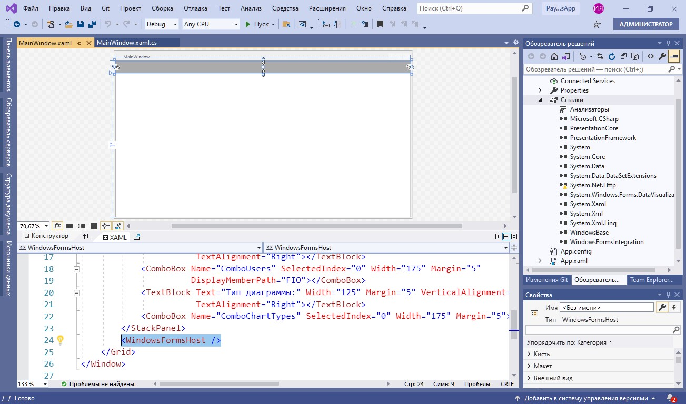
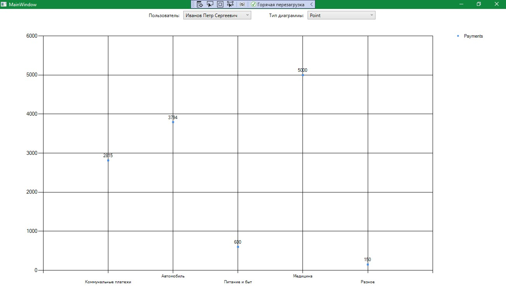

Демонстрация работы с графиками в Windows Forms
На данном занятии будет разработано простое приложение Windows Forms для визуализации расходов пользователей. Пользователи распределяют затраты по разным категориям и хранят их в общей базе данных. Итогом работы приложения будет служить работающая форма, в которой для каждого пользователя можно построить диаграммы различных типов для визуализации их расходов по категориям. Основные шаги построения приложения:
- Разработка интерфейса приложения
- Настройка взаимодействия с базой данных
- Реализация обработки данных
Важно
В рамках примера используется готовая база данных с информацией о пользователях, их платежах и категориях расходов (Скачать)
Разработка интерфейса приложения
1. Устанавливаем структуру формы
Важно
Интерфейс приложения будет состоять из двух основных частей: области построения и области настройки параметров просмотра
2. Добавляем элементы настройки параметров просмотра
Важно
Элементами настройки параметров просмотра будут являться выпадающие списки, позволяющие выбрать пользователя и тип диаграммы
3. Подключаем библиотеки для просмотра диаграмм
Важно
Диаграмма будет визуализироваться с помощью элемента Chart из WindowsForms. Воспользоваться данным элементом можно после подключения библиотеки System.Windows.Forms.DataVisualization, расположенного во вкладке Assemblies (сборки)
4. Добавляем элементы управления диаграммой

Важно
Диаграмма будет располагаться внутри элемента WindowsFormsHost. Данный элемент добавляется из окна ToolBox простым перетаскиванием
5. Добавляем пространство имен для работы с элементом Chart
6. Добавляем дополнительные параметры просмотра
Важно
Дополнительными параметрами являются имя диаграммы, а также легенда
Настройка взаимодействия с базой данных
1. Реализуем взаимодействие с базой данных
Важно
Взаимодействие реализуется путем добавления элемента «ADO.NET Entity Data Model»
2. Настраиваем свойства подключения базы данных
3. Добавляем подключение к базе данных

Реализация обработки данных
1. Создаем область построения графиков
Важно
Сперва создается поле для контекста EntityFramework с инициализацией. Затем создается область построения диаграммы ChartArea и добавляется в соответствующую коллекцию в конструкторе MainWindow
2. Добавляем наборы данных
Важно
Для каждого набора данных (например, данные линии на графике) необходимо добавлять в коллекцию Series. В данном случае есть одна серия данных для отображения сумм платежей по категориям. Объект Series создается с указанием названия и необходимости отображения на диаграмме
3. Загружаем данные из базы
Важно
Данные о пользователях загружаются в выпадающий список. Также загружаются типы диаграммы из перечисления SeriesChartType
4. Реализуем адаптивное изменение интерфейса
Важно
При выборе другого значения в ComboBox будет вызываться метод UpdateChart()
5. Получаем выбранные значения в выпадающих списках
Важно
Значения получаются как currentUser и currentType
6. Обрабатываем данные диаграммы
Важно
Приведенный код описывает получение серии данных диаграммы из соответствующей коллекции Series, установку типа диаграммы и очистку предыдущих данных
7. Обрабатываем список категорий
Важно
Список категорий получается из базы данных. Далее, в цикле foreach для каждой категории значение точки диаграммы добавляется в Points. Координата X будет названием категории, а координата Y будет суммой платежа для выбранного пользователя в текущей категории
Результат работы программы

Итоги
Вы познакомились с тем, как использовать основные элементы Windows Forms в приложении WPF